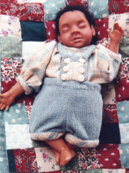

"Leroy" Baby "Leroy" is content to sleep on his patchwork quilt under the shade of one of grandma's trees......that is, as long as Grandma can put him down long enough to let him have a nap! Made of polymer clay and only six inches long, Leroy is a little bit of magic. He has a fully wire-armatured body and can be easily posed. Even his buttons are handcrafted from polymer clay.....I couldn't find buttons tiny enough for his little suit, so I made them. Although Baby Leroy is a One-Of-A-Kind, new babies are always being created .....please send me an E-mail for more information on babies who are currently available for adoption.  |